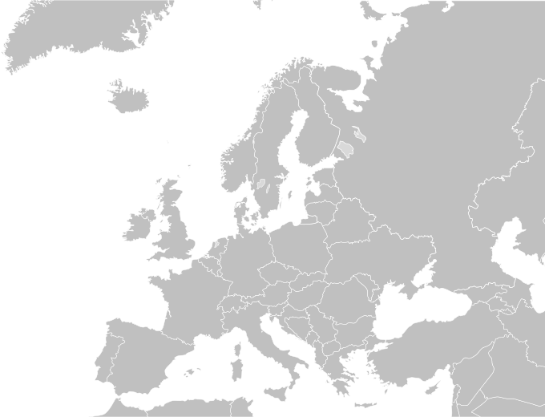

JavaScriptによるタッチデバイス制御
概要
タッチデバイス背景画像のみ縮小・拡大することを目標に実装した成果物を掲載する。
実装したコードなどはGit HubのtouchTestを参照のこと。
動作確認端末：Xperia SO-03 Android 8.0.0 Chrome
実装1.画像を移動（スワイプ）
補足
実装2.画像を移動（スワイプ）
補足
- 画面2本タッチ時、最初に触った指の位置で画像を移動
実装3.画像要素を拡大・縮小(ピンチアウト・イン）

補足
- キャンバス上のタッチイベントで画像のサイズを変更
- スワイプ操作(移動）なし
実装4,キャンバスに描画した図形の拡大・縮小
操作
- ピンチインで拡大、ピンチアウトで縮小
- スワイプで移動
99.参考サイト